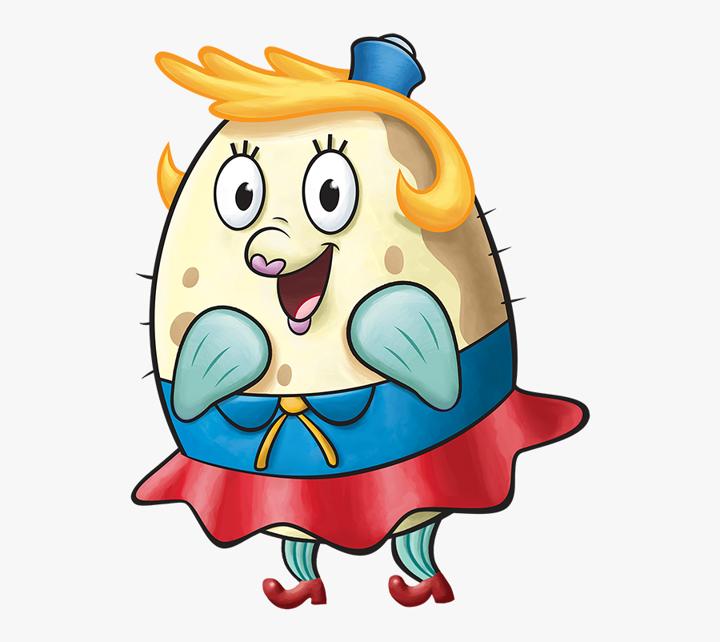

7)Мисс Пафф

Описание:
Миссис Пафф — рыба-шар, второстепенный персонаж американского мультсериала «Губка Боб Квадратные Штаны». Инструктор в школе вождения с криминальным прошлым и ее вечный ученик становятся источником разрушений города Бикини-Боттом и участниками немалого числа комедийных ситуаций.
День Рождения: Неизвестен
Пол: :Женский
Рост: Неизвестен
Вес: Неизвестен
Интересные факты:
-Ее первое имя, Поппи, раскрывается в игре SpongeBob SquarePants Typing.
-Миссис Пафф, надувающаяся в результате того, что Губка Боб разбил свою лодку, - это ссылка на подушки безопасности в пассажирских боковых частях транспортных средств, которые срабатывают всякий раз, когда упомянутый пассажир подвергается опасности.
-Известно, что Миссис Пафф является амбидекстром, потому что она использует свою правую руку в эпизоде "Школа управления катерами", но в "Ракета Сэнди" она пишет левой рукой.
-В первом сезоне, когда Миссис Пафф надувается, у нее глубокий голос. Однако, начиная со второго сезона, ее голос не меняется всякий раз, когда она надувается. Несмотря на это, Миссис Пафф обладает глубоким голосом, когда она надувается в эпизоде 10 сезона "Мозгокрут".
-Количество раз, когда Губка Боб проходил тест Миссис Пафф на вождение, резко возросло на протяжении всего мультсериала.
Назад